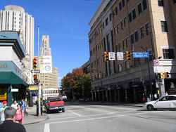
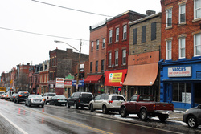
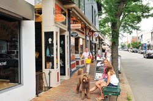
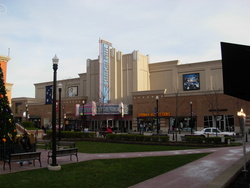
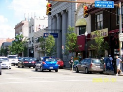

Living in Pittsburgh
Neighborhoods
Oakland
 First-time visitors to Pitt drive right through the heart of Oakland as they approach from the interstate, driving up the hill towards the Cathedral of Learning, passing copy shops, sandwich joints, bars, gas stations, fast food, hotels, several banks, and drug stores.
Bloomfield
 Bloomfield is a middle-class Italian-German neighborhood that is very quiet and offers affordable housing close to campus (just over 2 miles “as the crow flies”). The neighborhood is populated largely by families, and most apartments are in older houses or small apartment buildings. If you are looking to buy a house, homes in Bloomfield go for reasonable prices and have good resale values.
Shadyside
 Shadyside offers something for everyone, seriously. It has beautifully restored Victorian mansions and swanky apartments; the convenience of national retail stores such as The Gap and Apple are located adjacent to unique locally owned shops; every type of food and cuisine is accounted for as seen in the plethora of restaurants and trendy eateries.
South Side
 East Carson Street literally runs the whole gamut of the South Side, from flashy Station Square to hip and urbane SouthSide Works. In between these two entertainment and shopping destinations, though, lies a unique neighborhood with a crunchy, urban feel.
Squirrel Hill
 Squirrel Hill is the best neighborhood ever. It’s safe, it’s clean, and it has Murray Avenue, where you can get groceries, a good book, a haircut, a beer, or one of five buses to campus.
Attractions:
Pittsburgh Symphony Orchestra
The Andy Warhol Museum
Carnegie Museum of Art
Carnegie Museum of Natural History
Carnegie Science Center
The Mattress Factory
Ross Park Mall
SouthSide Works
Walnut Street
The Waterfront in Homestead
Transportation:
On average, Pittsburghers spend about 25 minutes commuting to work one way. That’s 18% less time than Philadelphia and 12% less than Boston.*
Pittsburgh International Airport is ranked best in the US by J.D. Power & Associates.*
Pittsburgh is within 500 miles of more than half of the U.S. population and less than 90 minutes’ flying time from 20 states and Canada.*
Safety
This region has the lowest crime rate of the top 25 metropolitan areas in the U.S.*
Century 21 Real Estate designates Pittsburgh the safest city in the U.S. (population greater than 1 million) and Money Magazine ranks property crime here lower than any other city in the Northeast. The latest FBI Uniform Crime reports support those rankings, listing Pittsburgh as one of the five-safest large cities in the U.S.*